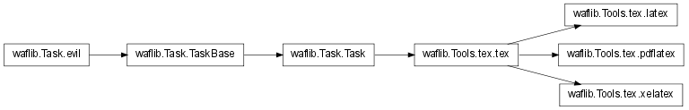

tex¶
TeX/LaTeX/PDFLaTeX/XeLaTeX support
Example:
def configure(conf):
conf.load('tex')
if not conf.env.LATEX:
conf.fatal('The program LaTex is required')
def build(bld):
bld(
features = 'tex',
type = 'latex', # pdflatex or xelatex
source = 'document.ltx', # mandatory, the source
outs = 'ps', # 'pdf' or 'ps pdf'
deps = 'crossreferencing.lst', # to give dependencies directly
prompt = 1, # 0 for the batch mode
)
- waflib.Tools.tex.bibunitscan(self)[source]¶
Parse the inputs and try to find the bibunit dependencies
Returns: list of bibunit files Return type: list of waflib.Node.Node
- waflib.Tools.tex.exts_deps_tex¶
List of typical file extensions included in latex files
- waflib.Tools.tex.re_tex¶
Regexp for expressions that may include latex files
- waflib.Tools.tex.g_bibtex_re¶
Regexp for bibtex files
- class waflib.Tools.tex.tex(*k, **kw)[source]¶
Bases: waflib.Task.Task
Compile a tex/latex file.

- scan()[source]¶
A recursive regex-based scanner that finds latex dependencies. It uses waflib.Tools.tex.re_tex
Depending on your needs you might want:
to change re_tex:
from waflib.Tools import tex tex.re_tex = myregex
or to change the method scan from the latex tasks:
from waflib.Task import classes classes['latex'].scan = myscanfunction
- check_status(msg, retcode)[source]¶
Check an exit status and raise an error with a particular message
Parameters: - msg (string) – message to display if the code is non-zero
- retcode (boolean) – condition
- bibfile()[source]¶
Parse the .aux file to find a bibfile to process. If yes, execute waflib.Tools.tex.tex.bibtex_fun()
- bibunits()[source]¶
Parse the .aux file to find bibunit files. If there are bibunit files, execute waflib.Tools.tex.tex.bibtex_fun().
- makeindex()[source]¶
Look on the filesystem if there is a .idx file to process. If yes, execute waflib.Tools.tex.tex.makeindex_fun()
- bibtex_fun(tsk)¶
Execute the program bibtex
- makeindex_fun(tsk)¶
Execute the program makeindex
- waflib.Tools.tex.feature(*k)¶
Decorator: register a task generator method that will be executed when the object attribute ‘feature’ contains the corresponding key(s):
from waflib.Task import feature @feature('myfeature') def myfunction(self): print('that is my feature!') def build(bld): bld(features='myfeature')
Parameters: - k (list of string) – feature names
- waflib.Tools.tex.before_method(*k)¶
Decorator: register a task generator method which will be executed before the functions of given name(s):
from waflib.TaskGen import feature, before @feature('myfeature') @before_method('fun2') def fun1(self): print('feature 1!') @feature('myfeature') def fun2(self): print('feature 2!') def build(bld): bld(features='myfeature')
Parameters: - k (list of string) – method names
- waflib.Tools.tex.warn(*k, **kw)¶
Wrap logging.warn
- waflib.Tools.tex.error(*k, **kw)¶
Wrap logging.errors, display the origin of the message when ‘-vv’ is set
- waflib.Tools.tex.debug(*k, **kw)¶
Wrap logging.debug, the output is filtered for performance reasons
- waflib.Tools.tex.apply_tex(self)[source]¶
Task generator method
Create waflib.Tools.tex.tex objects, and dvips/dvipdf/pdf2ps tasks if necessary (outs=’ps’, etc).
Feature : tex
- waflib.Tools.tex.configure(self)[source]¶
Try to find the programs tex, latex and others. Do not raise any error if they are not found.
Features defined in this module: